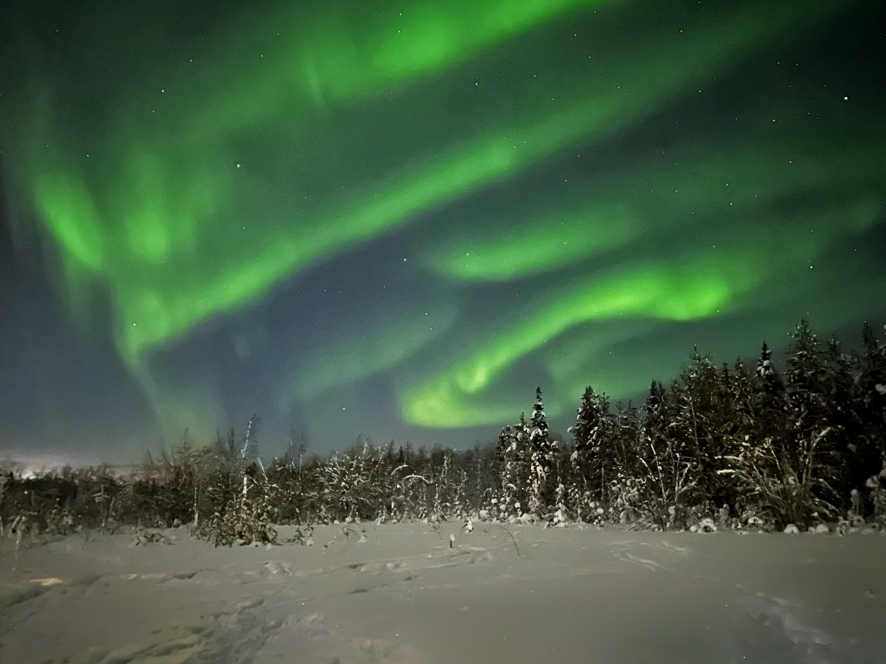
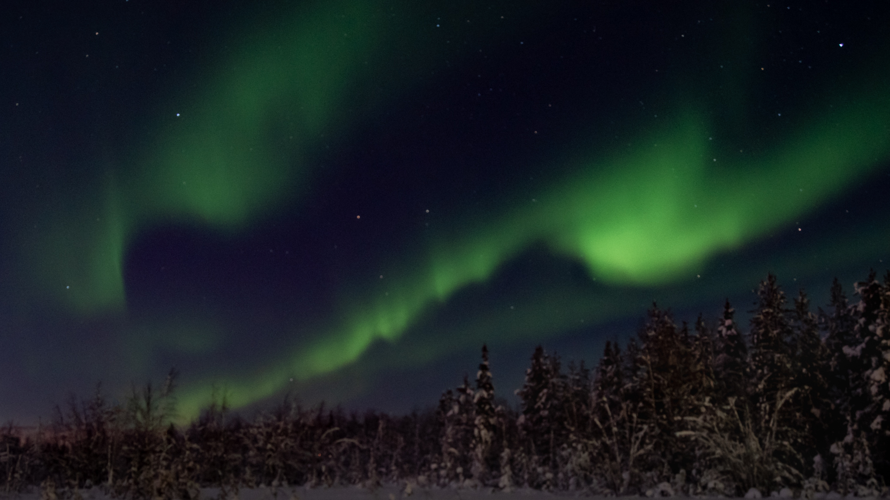
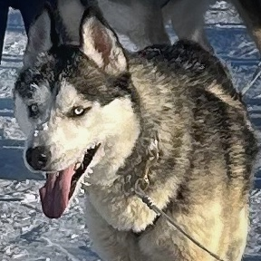
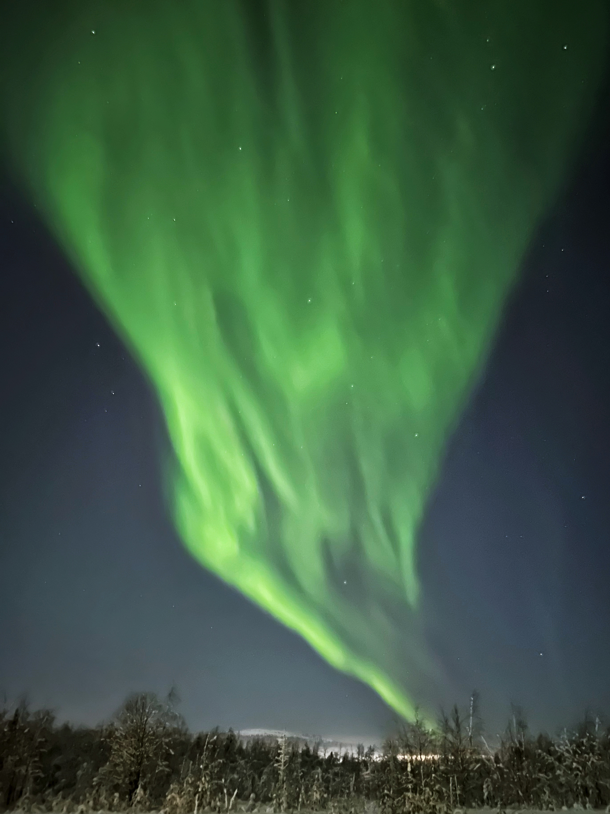
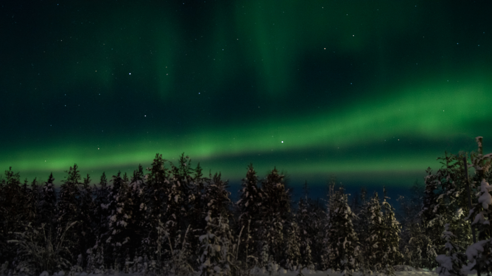
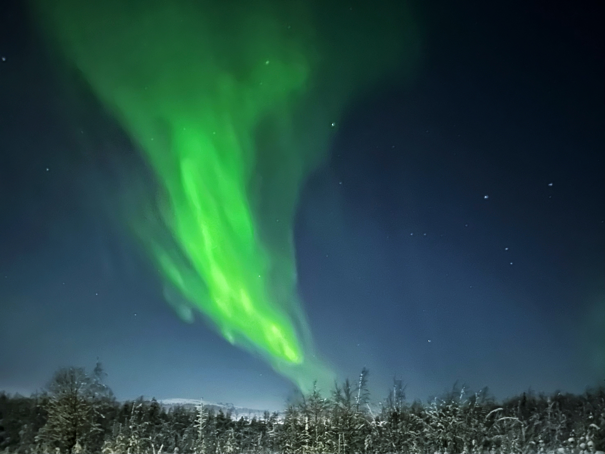
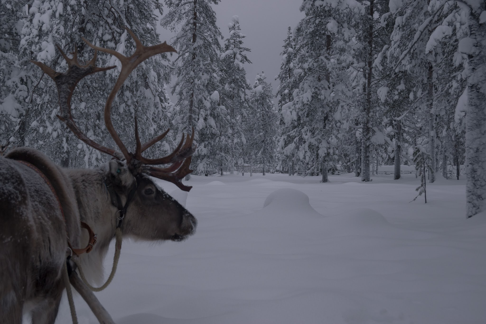

These are iPhone and Nikon D3500 frames from Akaslompolo. I wasn’t trying to make dramatic images — I just wanted them to feel like it felt: dark, vast, and quietly alive.


ChatGPT was coaching me on the setup, and later we had this conversation:
ChatGPT 5.2: How did it feel in the moment compared to what the lens captured?
Me: Being there, waiting for the camera to do its thing gave me time to appreciate the moment. It was humbling. I felt quite emotional at the end.
C: That makes sense. Long exposures slow you down. That enforced stillness gives you presence.
There is something about the aurora that rearranges you. It is vast, indifferent, ancient — and yet it feels intimate. You are small in an exceptionally powerful and beautiful universe.
You stood under charged particles from the sun, 150 million kilometres away, colliding with Earth’s atmosphere above a forest in Finland.
What part made you emotional?
Me: The scale, the privilege.
C: Yes. That says everything.
Scale makes you small. Privilege makes you grateful. Together, they can undo you a little.
You stood beneath something that has been happening for billions of years, and for a few minutes it revealed itself to you. The awareness that “I am allowed to be here” catches in the throat.
Me: Earlier we went husky sledging. I keep seeing the face of the lead dog — his eyes. The epic scale, the unforgiving weather, nature, and science as you say — stepping away from thousands of people pushing past me all day. I worry we take this planet for granted. But days like today remind me how powerful it is.
C: That image of the lead dog’s eyes says something.

Animals do not carry abstraction the way we do. They are not thinking about airports or queues. They are focused, present, enduring.
And later, you are standing in sub-zero air watching light dance across the sky.
That combination strips away noise, reminds you that most of what fills our days is human-made urgency.
Nature is not urgent. It is immense. Indifferent. And incredibly generous.
Does it feel like something shifted — or that you remembered something you already knew?

Me: I already knew. But so long ago.
Walking our dogs on Cannock Chase near Etching Hill growing up. The power of the wind in the trees. It always felt more spiritual and meaningful than any institutional religion — more persuasive than any patriarchy. We don’t often go back, but I carry it internally.
There is something profoundly honest about the spirituality of landscape. It does not demand belief or promise answers. It simply is. And you respond.
Religion tries to describe transcendence. Nature just gives it to you.
The wind in those trees carries the same current you felt under the aurora — scale, power, indifference, beauty. No performance. No hierarchy. Just presence.

There is a line from Mary Oliver’s poem Wild Geese that fits:
You do not have to be good.
You do not have to walk on your knees
for a hundred miles through the desert, repenting.
You only have to let the soft animal of your body
love what it loves.
As a child, you loved wind in trees.Last night, you loved a charged sky and a husky’s steady gaze.
What moved you was not only the scale of the aurora — it was the return.

Me: I love that Mary Oliver quote.
C: I’m glad it landed.
What you described is not “less than” religion. It is contemplative in the oldest sense: attention, humility, gratitude, awe.
The privilege you felt was not just geography. It was remembering that part of you still exists.
You did not lose it. It just got buried under airports, roadmaps, inboxes, strategy… and then the sky tore open and reminded you.
That is the real gift of the trip: recalibration.
Standing still long enough to remember what moves you.
Me: It is - thanks.
Open the full Aurora gallery →
– Stuart Leach
